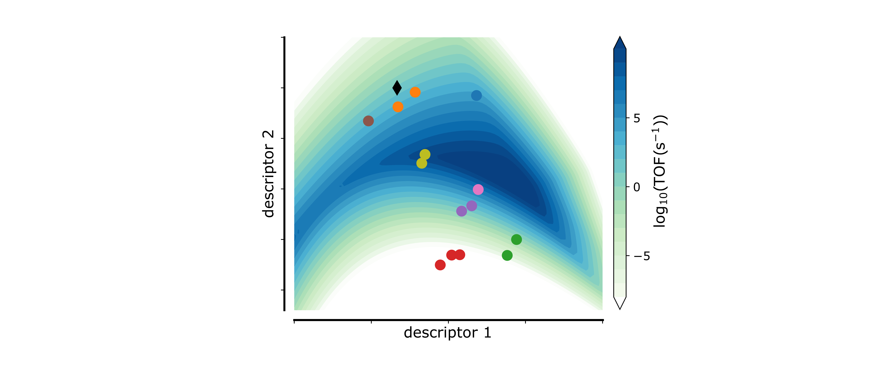

High-throughput computational search for high performance energy materials

The development of new materials for energy conversion and storage processes is significantly limited by the time it takes to synthesize new materials. Computational techniques can provide insights into a much wider range of materials in a short time-scale, but quantum chemical methods remain too slow to tackle the vast chemical material space. In this project, we are aiming therefore from detailed quantum chemical calculations and kinetic modeling to develop insights into descriptors that accurately depict catalytic activity and selectivity trends across materials. Such descriptors are planned to be learned by high-performance machine learning algorithms, so that they can be quickly estimated for a giant class of materials.
Related research projects/funds:
- NRF-DFG matching fund, RS-2025-02317654
- 중견창의연구 NRF research fund, RS-2025-23525637
- Samsung Electronics collaboration fund
Subgroup members:
Stefan Ringe, 한승창
Seungchang Han, 김찬진
Chanjin Kim, 유수연
Suyeon Yoo, 김동원
Dongwon Kim
Related publications 29
-
Peaks and pitfalls of electrocatalytic CO2 reduction descriptor models
B. Kim et al., Nat. Catal. 2026, 9, 471-481.
-
Understanding Electrochemical CO2 Reduction Selectivity of Cu Binary Alloys from Electronic Structure Descriptors
Y. Jung et al., J. Am. Chem. Soc. 2025, 147, 39796-39804.
-
Photocatalytic Hydrogen Production Using Semiconductor (CdSe)13 Clusters
S. Lee et al., Nano Lett. 2025, 25, 7351-7360.
-
Atomistic simulations of heterogeneous electrocatalysis at the center of sustainable carbon feedstocks
S. Ringe et al., Curr Opin Electrochem 2025, 51, 101671.
-
CO Cryo-sorption as a Surface-sensitive Spectroscopic Probe of the Active Site Density of Single-atom Catalysts
B. Jeong et al., Angew Chem Int Ed Engl 2025, 64, e202420673.
-
Nucleation-Controlled Doping of II–VI Semiconductor Nanocrystals Mediated by Magic-Sized Clusters
S. Ji et al., Small Sci. 2024, 5, 2400300.
-
Elucidating Solvatochromic Shifts in Two-Dimensional Photocatalysts by Solving the Bethe–Salpeter Equation Coupled with Implicit Solvation Method
S. Kim et al., J. Phys. Chem. Lett. 2024, 15, 4575-4580.
-
Heterogeneous Catalyst as a Functional Substrate Governing the Shape of Electrochemical Precipitates in Oxygen-Fueled Rechargeable Batteries
M. Park et al., J. Am. Chem. Soc. 2023, 145, 15425-15434.
-
Trace-Level Cobalt Dopants Enhance CO2 Electroreduction and Ethylene Formation on Copper
B. Kim et al., ACS Energy Lett. 2023, 8, 3356–3364.
-
The importance of a charge transfer descriptor for screening potential CO2 reduction electrocatalysts
S. Ringe, Nat. Commun. 2023, 14, 2598.
-
Tuning the C1/C2 Selectivity of Electrochemical CO2 Reduction on Cu-CeO2 Nanorods by Oxidation State Control
S. Hong et al., Adv. Mater. 2023, 35, 2208996.
-
Active and stable PtP2-based electrocatalysts solve the phosphate poisoning issue of high temperature fuel cells
J.H. Yu et al., J. Mater. Chem. A. 2023, 11, 6413-6427.
-
A unifying mechanism for cation effect modulating C1 and C2 productions from CO2 electroreduction
S. J Shin et al., Nat. Commun. 2022, 13, 5482.
-
GW Quasiparticle Energies and Bandgaps of Two-Dimensional Materials Immersed in Water
S. Kim et al., J. Phys. Chem. Lett. 2022, 13, 7574 - 7582.
-
Strained Pt(221) Facet in a PtCo@Pt-Rich Catalyst Boosts Oxygen Reduction and Hydrogen Evolution Activity
E. B. Tetteh et al., ACS Appl. Mater. Interfaces 2022, 14, 25246 - 25256.
-
Tunable Product Selectivity in Electrochemical CO2 Reduction on Well-Mixed Ni-Cu Alloys
H. Song et al., ACS Appl. Mater. Interfaces 2021, 13, 55272 - 55280.
-
Selective electrochemical reduction of nitric oxide to hydroxylamine by atomically dispersed iron catalyst
D. H. Kim et al., Nat. Commun. 2021, 12, 1 - 11.
-
Atomistic Insight into Cation Effects on Binding Energies in Cu-Catalyzed Carbon Dioxide Reduction
T. Ludwig et al., J. Phys. Chem. C 2020, 124, 24765–24775.
-
Thermal Transformation of Molecular Ni2+–N4 Sites for Enhanced CO2 Electroreduction Activity
Y. J. Sa et al., ACS Catal. 2020, 10, 10920 - 10931.
-
Electric field mediated selectivity switching of electrochemical CO2 reduction from formate to CO on carbon supported Sn
M. Lee et al., ACS Energy Lett. 2020, 5, 2987 - 2994.
-
Confined local oxygen gas promotes electrochemical water oxidation to hydrogen peroxide
C. Xia et al., Nat. Catal. 2020, 1, 1 - 10.
-
Unified Approach to Implicit and Explicit Solvent Simulations of Electrochemical Reaction Energetics
J. A. Gauthier et al., J. Chem. Theory Comput. 2019, 15, 6895 - 6906.
-
Practical Considerations for Continuum Models Applied to Surface Electrochemistry
J. A. Gauthier et al., Chemphyschem 2019, 20, 3074 - 3080.
-
Understanding cation effects in electrochemical CO2 reduction
S. Ringe et al., Energy Environ. Sci. 2019, 12, 3001 - 3014.
-
A Two-Dimensional MoS2 Catalysis Transistor by Solid-State Ion Gating Manipulation and Adjustment (SIGMA)
Y. Wu et al., Nano Lett. 2019, 19, 7293 - 7300.
-
Influence of Atomic Surface Structure on the Activity of Ag for the Electrochemical Reduction of CO2 to CO
E. L. Clark et al., ACS Catal. 2019, 9, 4006 - 4014.
-
Solvent–Adsorbate Interactions and Adsorbate-Specific Solvent Structure in Carbon Dioxide Reduction on a Stepped Cu Surface
T. Ludwig et al., J. Phys. Chem. C 2019, 123, 5999 - 6009.
-
Challenges in Modeling Electrochemical Reaction Energetics with Polarizable Continuum Models
J. A. Gauthier et al., ACS Catal. 2019, 9, 920 - 931.
-
Theoretical Approaches to Describing the Oxygen Reduction Reaction Activity of Single-Atom Catalysts
A. M. Patel et al., J. Phys. Chem. C 2018, 122, 29307 - 29318.